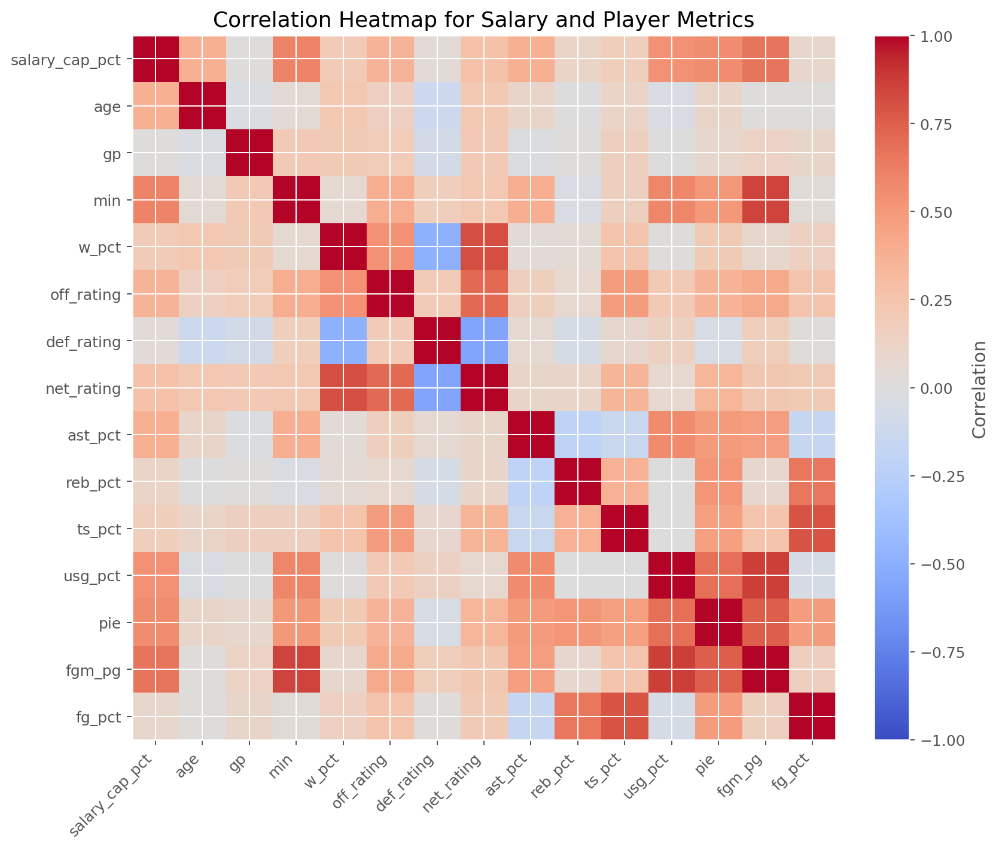
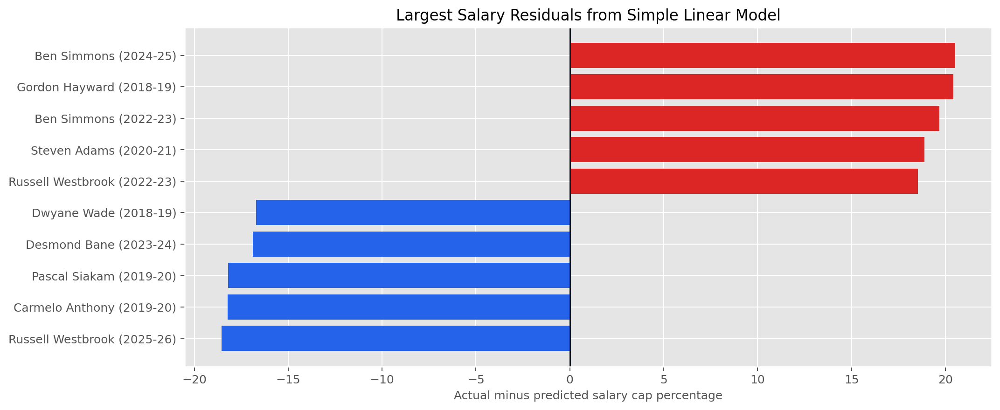
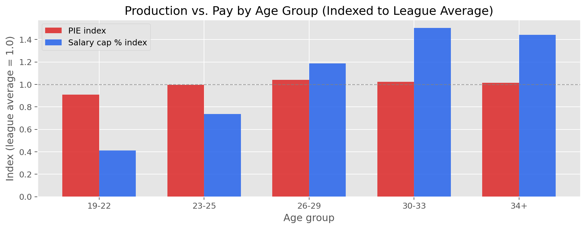
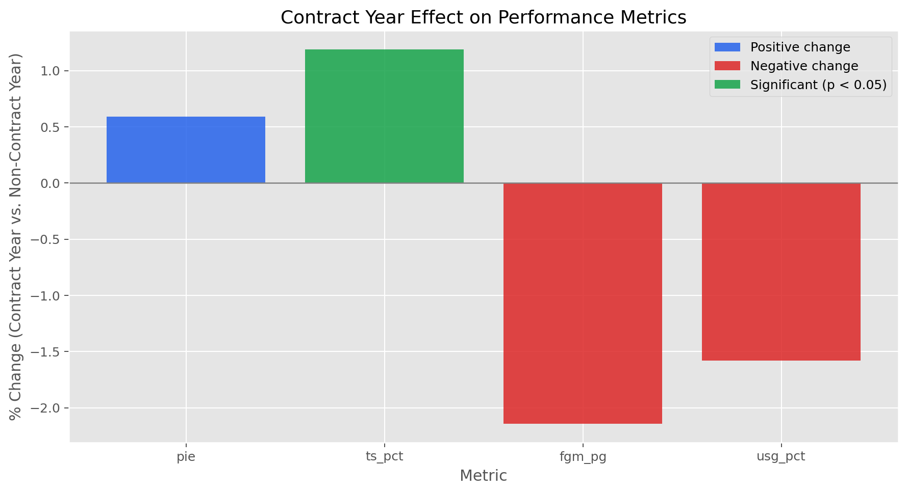

SIADS Milestone I · University of Michigan · Spring/Summer 2026 · Ryan McCurry, Yuki Kodama, and Quentinn Roby
View on GitHub →On this page
Do NBA teams win because they spend more, or because they spend more efficiently? This project builds a data-driven framework for evaluating whether NBA player salaries reflect on-court production — something that gets debated constantly but rarely measured systematically.
Working with a decade of player-season data (2016–17 through 2025–26), we modeled expected salary as a percentage of the salary cap using performance metrics, then used the gap between predicted and actual pay to identify over- and undervalued players. We also examined whether younger players are systematically underpaid and whether contract timing shapes how players perform.
The project spans the full data science pipeline: two custom data pipelines pulling from the NBA API and Basketball Reference, a joining and cleaning process across 2,973 player-seasons, OLS regression modeling, and a series of visualizations that translate the findings into a clear, interpretable story.
Skills demonstrated in this project



